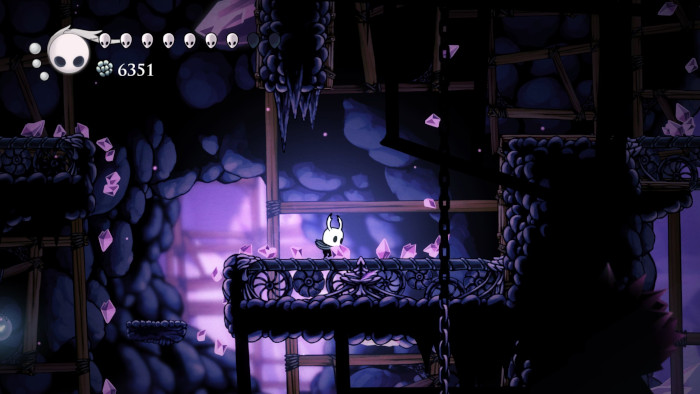
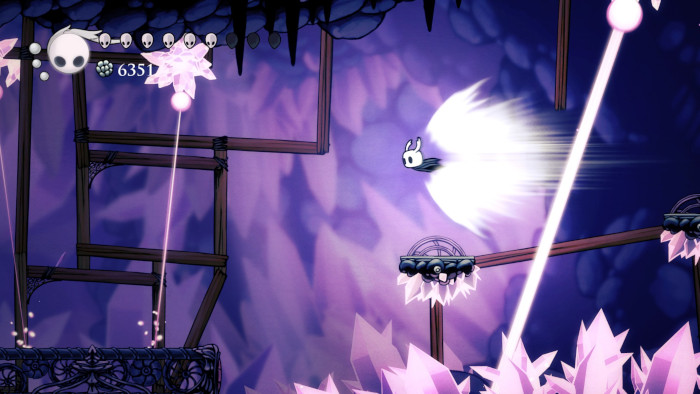

Pico de Cristal
O Pico de Cristal é uma região montanhosa com cristais que refletem a luz, criando paisagens brilhantes e angulares.

Plataformas e Desafios
O terreno é irregular, com saliências cristalinas que desafiam a movimentação. Criaturas adaptadas à região acrescentam perigo à exploração.
